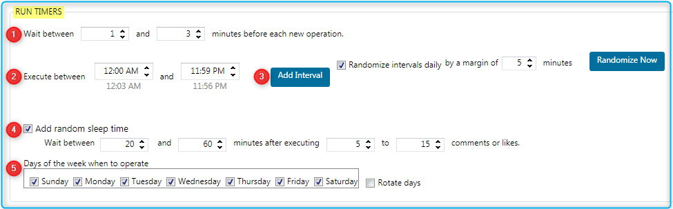
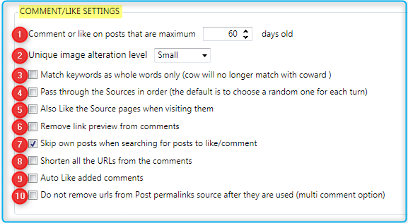
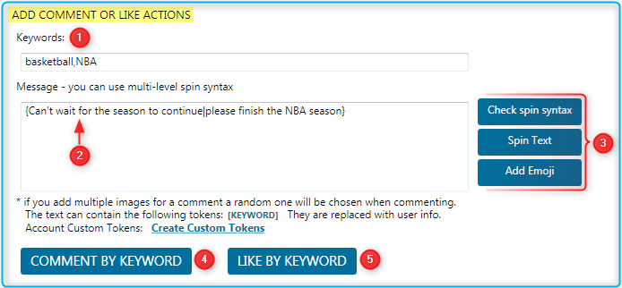
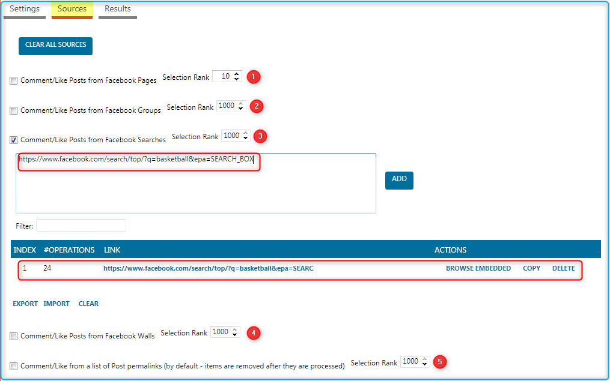
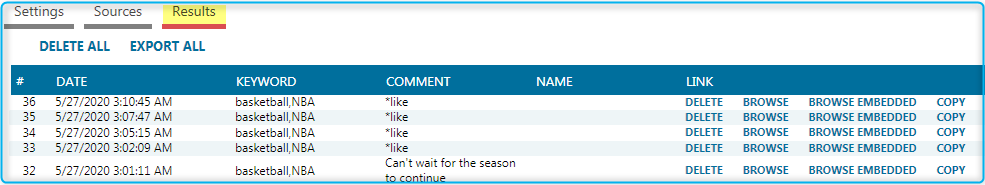

Search The JARVEE Knowledge Base
JARVEE has a separate Like and Comment tool. However, for Facebook, the commenting and liking are combined in one tool, the Comment&Like tool.
Facebook Comment&Like tool is divided into 3 tabs: Settings, Sources and Results

The Settings tab
It has 4 Sections: Run Timers, Comment/Like Limits, Comment/Like Settings and Add Comment or Like Action
Run Timers
In the Run timers section, there are timers that you can use to set up how often and at what time exactly the tool should work, and of course, the days when the tool should work.

1. Wait between X and Y minutes before each new operation – you can determine how many minutes JARVEE will wait before it starts a new operation. One operation for the Comment&Like tool represents one like or one comment.
2. Execute Between X and Y hours – will allow you to set up the exact in-between time when the tool will operate.
3. Add Interval – will allow you to add time intervals as well as randomize intervals daily
4. Add Random sleep time – this will allow you to add random sleep time, specify x and y minutes to sleep after executing x to y comments or likes.
5. Days of the week when to operate – lets you choose days when the tool will work. You can simply include or exclude days by checking/unchecking them. You can also opt to “Rotate Days”.
📌 On rotating days, JARVEE would pick the equivalent number of days you have initially selected; the selection is random and you have the option to exclude weekends in the variation in case you don’t want to comment and like on Saturdays and Sundays.
Comment&Like Limits
In this section, you can set some limitations for the tool in order to avoid commenting and liking too much.

As you can see in the screenshot above, we have:
1. Comment/Like a maximum of X and Y per day option and per hour – you will use it in order to set how many posts should be liked or commented on. Next to it, you have the option “Increase each day/hour by X until it reaches Y Comment/Like per day/hour”.
Example: if you set the tools max to be 10 – 20 and set “Increase each day by 5 until it reaches 50”, JARVEE will increase X and Y each day for 5 until Y reaches 50.
2. When executing a LIKE operation also like X comments from target posts – this option can be used to also like comments of other users on your target post in order to draw attention to your profile/page.
3. Comment/Like on a maximum of X posts of individual source every X hours (0 – no limit) – commenting or liking posts based on the same source very often can be a disadvantage, you can get blocked. Hence, to avoid this, you can use this option to determine how many times you will like posts or comment on posts of each target account/page that you have added in the Sources tab.
Comment/Like Settings
The Comment/Like Settings section has multiple useful options, so you can control which posts will receive a comment or like action.

1. You can set how old the posts that you are going to like/comment on
2. In case you are posting an image as your comment, you can use the Unique image alternation level in order to make images unique for Facebook’s algorithm. It can be set to Small, Medium and Hard. We recommend setting this to Medium.
3. JARVEE can be used to like or comment on posts that contain specific keywords, thus, in case you want to match keywords as a whole, you can check this option
4. When you add sources (in Sources tab) that will be used by the tool, JARVEE will randomly choose a target account and source from the list in the Sources tab. However, you can check this option so that it will go through the sources in order.
5. You can select to like the source Page when the tool visits them when searching for posts
6. In case you are posting a link in your comment, FB will display a link preview. To remove the preview from the comments check the “Remove Link Preview” option.
7. It’s possible that the Comment&Like tool will find your posts and try to like or comment on them. Should you wish to avoid this, just check “Skip own posts when searching for posts to comment/like”.
8. If you are using links in your comments, it’s a good idea to shorten them so they look nicer, especially if the link is too long.
9. Auto Like added comments will simply like your own comment after posting it.
10. In the Sources tab, you have the option to comment on posts by permalinks. And by default, when JARVEE posts comment on one of those posts, the permalink is removed from the sources. Further to that, you can check this option if you want to keep the permalinks in the sources.
Add Comment or Like Action
After you set up the tool, you need to scroll down to this section and choose whether you want to comment on posts, like them or both.

1. To search for specific posts based on the sources you’re using, you need to add “Keyword/s” that the posts must contain in the Keywords field
2. Next, add your comment in the Comment text field. You can also use [KEYWORD] token (they are replaced with user info.) and you may also create your Custom Tokens by clicking ‘Create Custom Tokens’ which will redirect you the Profile settings where you can enable ‘Custom Tokens’ and create your own tokens.
3. The Comment text field supports spinning syntax and it’s highly recommended to use it in order to get different comments each time. ‘Check spin syntax’ will generate random comment sequences and this is where you can see if you have correctly used the format. ‘Spin Text’ will open Spin syntax editor where you also edit your comments as well as view its statistics. There is also a bunch of Emojis you can choose from the ‘Add Emoji’ button.
4. Once you’ve added your comment, just click on COMMENT BY KEYWORD button
5. If you want to Like posts instead of making a comment, just do step 1 and click on the ‘LIKE BY KEYWORD’ button.
✅ If you want to catch all the latest posts from source, then don’t add any keywords, just leave the field empty and JARVEE will make sure it likes and comments on all the latest posts.
The Sources tab
Like most tools, you need to add sources in the Sources tab which JARVEE will use to find posts to like or comment on.
There are 5 types of sources in the Sources tab.

1. Comment/Like posts from Facebook Page source is used if you want to like or comment on posts from Facebook pages.
To add a page as a source, simply copy and paste the Facebook page URL to the text field in this source and click on ADD. The good thing about this source is that you can use it to like or comment on either your Facebook profile or Facebook page.
✅ To use the Facebook page for commenting, check “Execute action as page” in the table with the sources and choose the page that you would like to use to like/comment on that specific source. If you want to use the same Facebook page to like or comment on all pages in this source, then use option „Set page for all elements“ choose your Facebook page there and click on the ‘SET PAGE’ button.
2. Comment/Like Posts from Facebook Groups, as you probably assume, will allow you to like or comment on posts made in specific groups.
Make sure you use the Comment&Like tool of a Facebook profile that is a member of the group you are adding here, otherwise, the profile won’t be able to like or post comments on group posts. To add a group, just paste the group’s URL and click ADD.
3. Comment/Like Posts from Facebook Searches source can be used to comment on posts that are displayed after performing a search on Facebook.
For example, you can open your Facebook profile in your external browser and search for the keyword “Basketball”, then click on POSTS. Copy the URL from the address bar and paste it in this source. JARVEE will then like or post comments on posts that are displayed when searching for this keyword.
4. Comment/Like Posts from Facebook Walls is used to comment or like posts of Facebook profiles or your friends. Just add the profile’s URL here and click on the ADD button and JARVEE will like posts or comments on that profile’s wall.
To easily add all your friends to this source, we implemented the ADD FRIENDS button. Simply click it and JARVEE will add all your friends to this source.
5. Comment/Like from a list of Post permalinks is the source you’ll use if you want to like or comment on some specific Facebook posts.
Just head over to Facebook, go to that post, grab its URL and paste it to this source. Next, click ADD and you are ready for commenting.
✅ By default, the permalink will be removed after liking once or posting one comment. If you want to keep the permalink in the list, then you can use the option we previously mentioned in the ‘Comment & Like’ settings which is “Do not remove URLs from Post permalinks source after they are used”
When you are done setting up the Settings and Sources tab, you can go back to the Settings tab and start it. All commented posts will be sent to the RESULTS tab.
The Results tab
The Results tab contains all the likes and comments you have made through JARVEE. From here, you can see the exact date and time when the like or comment operation was executed.
Also, you’ll see what keyword was used to search for the post that received the comment or like action. If it’s a comment operation, you’ll see what text was posted.

Next to each Comment/Like in the Results table, you will find:
- Delete button – so you can easily delete that comment from the list in the Results tab.
- Browse button – click it to open liked/commented post in external browser
- Browse Embedded button – click it to open liked/commented post in the embedded browser used by the account that made the comment
- Copy button – click it to copy URL of the liked/commented post.
In case you want to delete all comments from the results tab or export them, you can use DELETE ALL or EXPORT ALL buttons located right above the list.